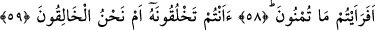
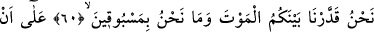
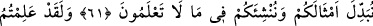
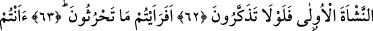
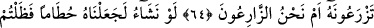
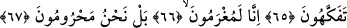
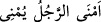
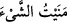

DÜŞÜNÜP İBRET ALMANIZ
GEREKMEZ Mİ?
58. Söyleyin öyleyse, (rahimlere) döktüğünüz meni nedir?
59. Onu siz mi yaratıyorsunuz yoksa yaratan biz miyiz?
60. Aranızda ölümü takdir eden biziz. Ve biz, önüne geçilebileceklerden değiliz.
61. Böylece sizin yerinize benzerlerinizi getirelim ve sizi bilmediğiniz bir âlemde
tekrar var edelim diye (ölümü takdir ettik).
62. Andolsun, ilk yaratılışı bildiniz. Düşünüp ibret almanız gerekmez mi?
63. Şimdi bana, ektiğinizi haber verin.
64. Onu siz mi bitiriyorsunuz, yoksa bitiren biz miyiz?
65. Dileseydik onu kuru bir çöp yapardık da şaşar kalırdınız.
66. “Doğrusu borç altına girdik.
67. Daha doğrusu, biz yoksul kaldık” (derdiniz).
Kadınların rahimlerine akıtıp döktüğünüz, çocukların meydana geldiği menî nedir;
bana bunu haber veriniz. Âyet-i kerîmede gecen eferaeytüm cümlesi, “bana haber
veriniz” mânâsında olup, “mâ tümnûn” cümlesi birinci mefûlü, soru cümlesi ise ikinci
mefûlüdür.
Erkeğin menîsini akıtması sadece __WORD__ (emnâ’r-racülü yümnî) şeklinde ifâde
edilir. Bir şeyi yapıp yerine getirdiğin zaman da __WORD__ (meneytü’ş-şey’e) dersin.
Erkek spermine menî adı verilmesi ise, canlının yaratılmasının ondan olması
sebebiyledir.